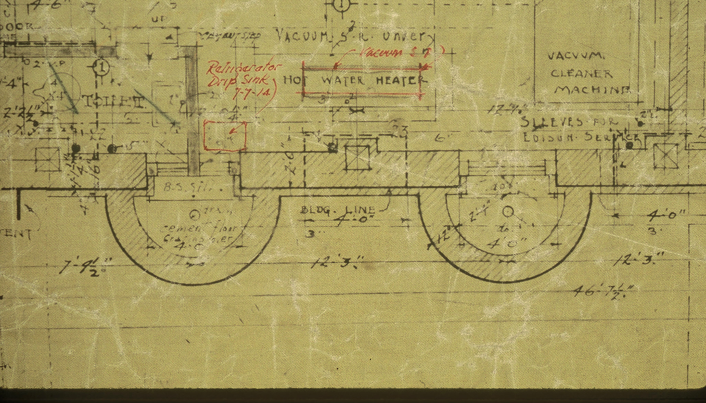
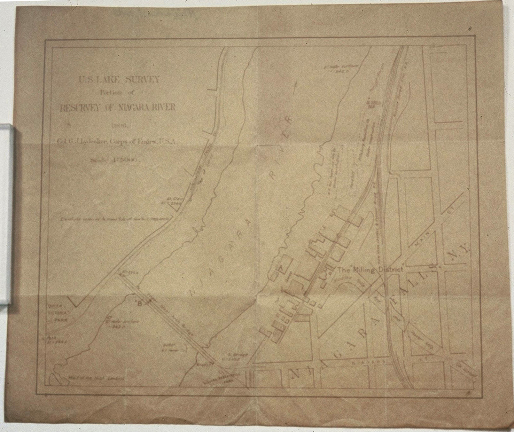
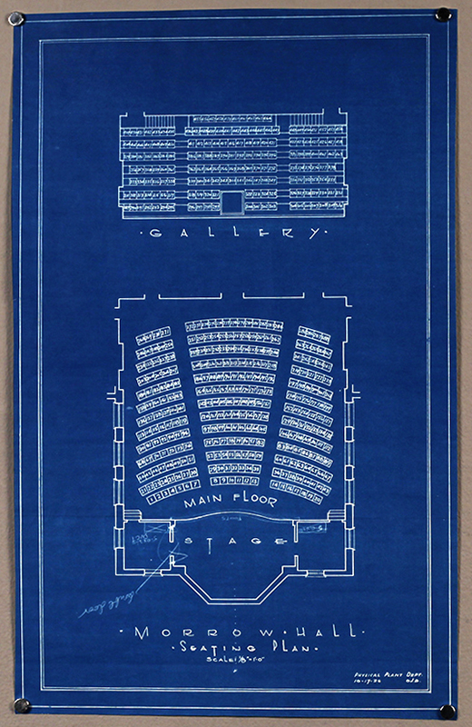
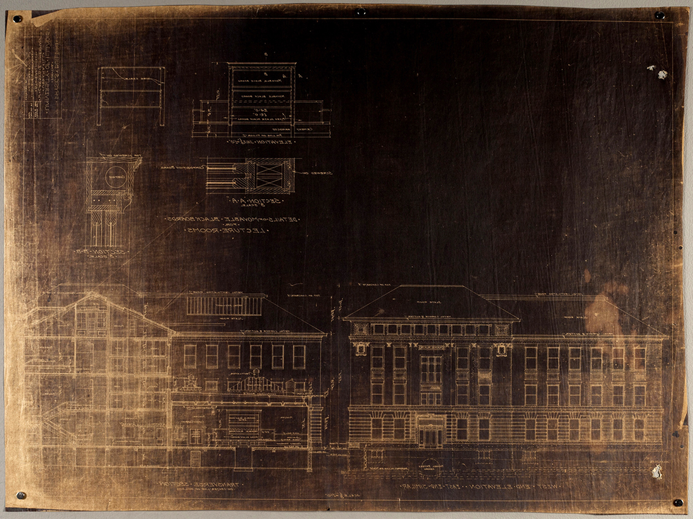
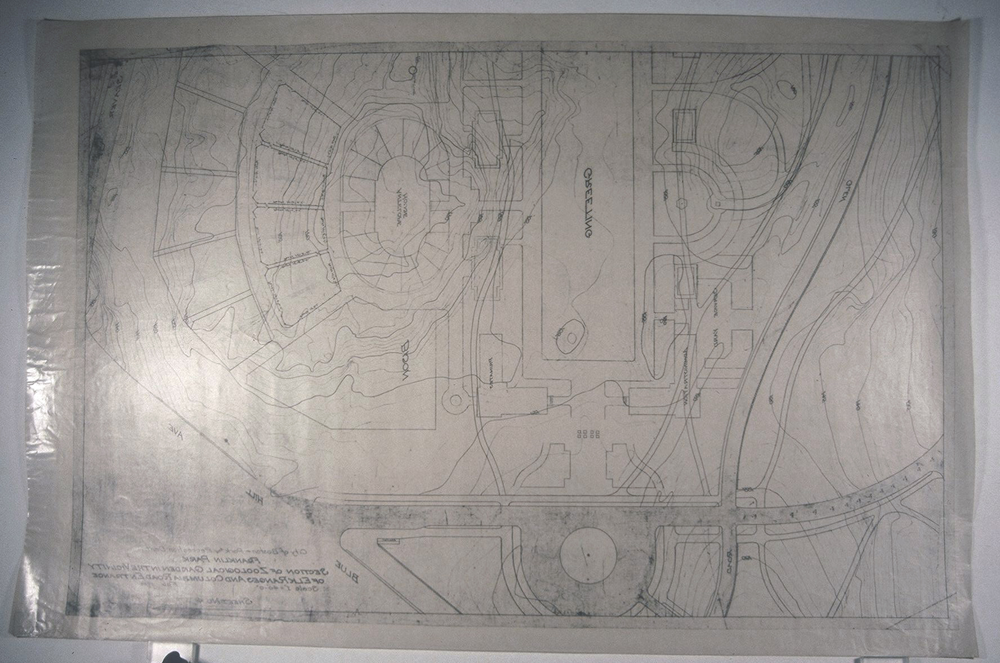
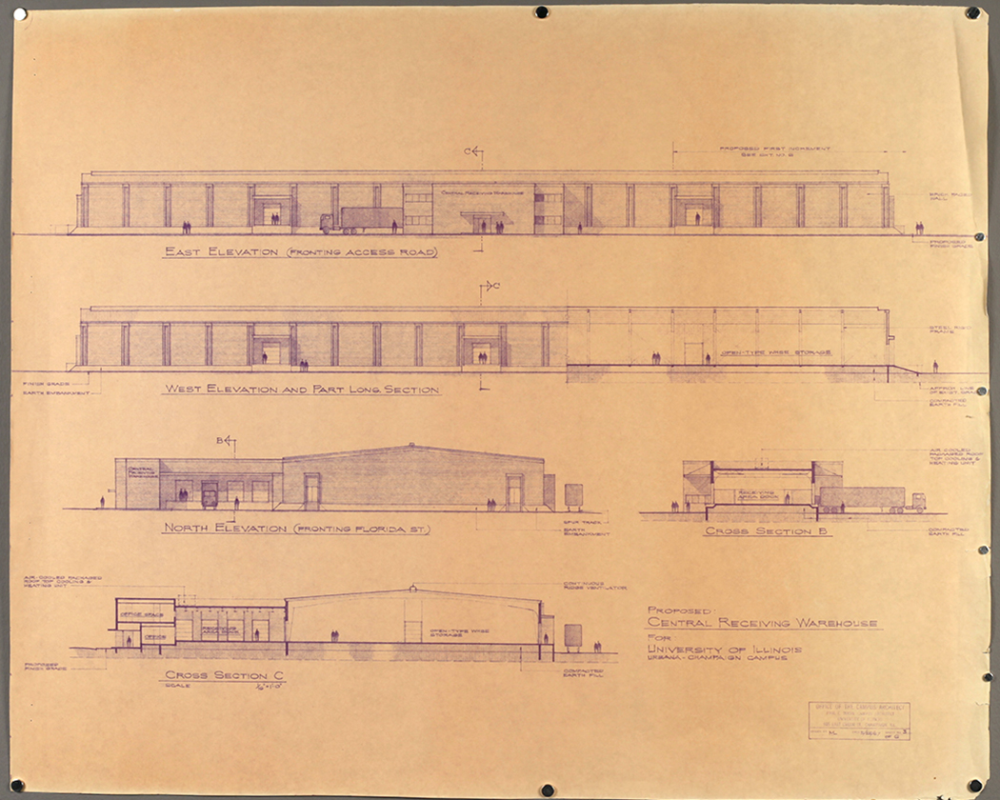
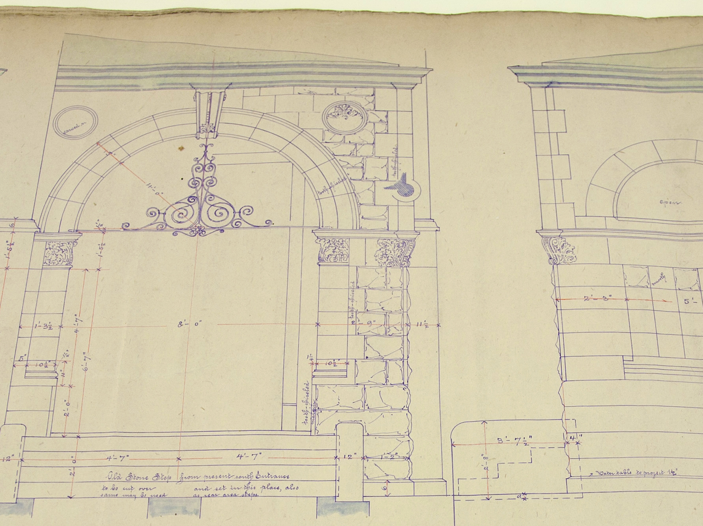
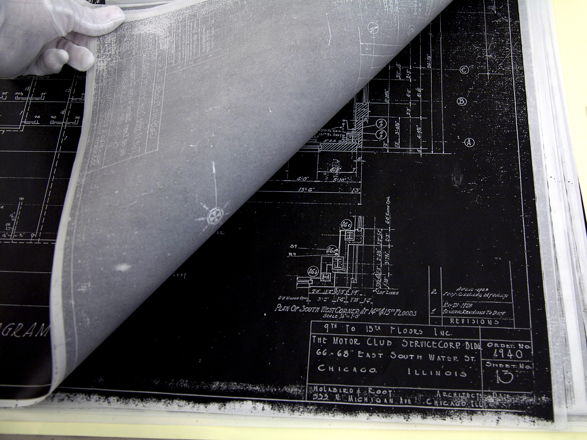

Aniline print. Images courtesy of Lois Olcott Price.
Image
Aniline dye-based ink
Identification
Ground has a distinctive greenish or yellowish tint, with lighter-colored verso (back). Positive image is low contrast with soft lines, most commonly violet, blue, or black. Aniline prints are rarely found in collections.
Preservation
Very sensitive to UV light, which will cause image fading.
Sensitive to heat and high humidity.
Residual chemicals in the print may result in discoloration, embrittlement, scratches, scuffs, and cracks.
Ferro-gallic print. Images courtesy of Lois Olcott Price.
Image
Iron gallo-tannate pigment ink
Identification
Positive image on a light, probably yellowed or discolored, ground. Image lines are likely faded to brown or dull black. Image lines may appear either raised or burned into the support’s surface, depending on method of production. Multi-media and marginalia common.
Preservation
Residual acid in the print may cause yellowing and embrittlement of support.
Acidic image material may cause lacing of the support.
Sensitive to light, which will cause image lines to discolor, fade, or even disappear.
Due to destructive off-gassing, should be stored separately from other formats.
Blueprint. Courtesy of the Facilities & Services, UIUC, University of Illinois Board of Trustees.
Image
Prussian blue pigment
Identification
More commonly found as a negative image, but positive images were also made (“pellet prints”). Extremely matte surface with continuous tone, brilliant blue image.
Preservation
Very sensitive to light, otherwise relatively stable.
VanDyke print. Courtesy of Facilities & Services, UIUC, University of Illinois Board of Trustees.
Image
Silver and iron
Identification
High contrast image may be positive (final print) or negative (internegative). Negative prints have a cool brown ground with white lines, while positive prints have a white ground with cool brown lines similar in appearance to a sepia diazo print. Unlike the speckled "dirty" ground of a sepia diazo, the ground of a positive VanDyke print will appear uniform and clean. Blue staining may be visible on verso (back).
Preservation
Residual acid in the print may cause yellowing and weakening of support.
Sensitive to air pollutants, heat, and high humidity.
Photostat (1909 – c. 1975, use declined after 1950)
Photostat. Courtesy of Facilities & Services, UIUC, University of Illinois Board of Trustees.
Image
Photographic silver (emulsion)
Identification
More commonly found as a negative image, but positive images were also made. Silver mirroring common. Usually high contrast black and white images.
Preservation
Prone to silvering and yellowing, especially if not properly washed.
Sensitive to air pollutants, heat, and high humidity.
Wash-off print with apparent surface gloss. Images courtesy of Lois Olcott Price.
Image
Photographic silver (emulsion)
Identification
Positive image with strong ink-like black lines which appear to sit on the surface of the support in slight relief. The lines may exhibit a subtle metallic sheen. Ground is usually clean and smooth, but may be littered with tiny black flecks left from emulsion. Image may be printed in reverse.
Preservation
Oxidized image lines may yellow or exhibit silver mirroring.
Drafting cloth may discolor over time.
Sensitive to air pollutants, heat, and high humidity.
Diazo print. Courtesy of Facilities & Services, UIUC, University of Illinois Board of Trustees.
Image
Azo dye-based ink
Identification
Often seen with dirty, flecked ground and yellow discoloration especially along edges. If on paper, verso (back) is noticeably bright white in comparison to recto (front). May possess an ammonia odor.
Preservation
Paper likely embrittled and yellowed from residual chemicals.
Exposure to heat and light will cause image fading.
Due to destructive off-gassing, should be stored separately from other formats.
Hectograph. Courtesy of the Chicago History Museum: Chicago Board of Education - Architectural records for buildings by Schmidt, Garden & Erikson and related firms, 1993.285
Image
Aniline dye-based ink
Identification
Similar in appearance to spirit duplicates and diazotypes. Printed on glossy, heavily surfaced paper with violet or blue aniline dyes, although multiple colors were sometimes used. Image lines are fuzzy with poor line definition.
Preservation
Very sensitive to UV light, which will cause image fading.
Aniline dyes are water soluble; should not be exposed to high humidity or moisture.
May be identified by sharp, dense black image lines which may be confused with an original drawing. Prints could be made in other colors although black was most common.
Preservation
Color inks are dye-based, water soluble, light and heat sensitive.
Stable overall, preservation risk depends primarily on quality of support material.
Electrostatic copy of architectural drawings. Courtesy of the Chicago History Museum: Holabird & Root - Chicago Motor Club - Architectural records for buildings by Holabird & Root, 1979.242 ATlot